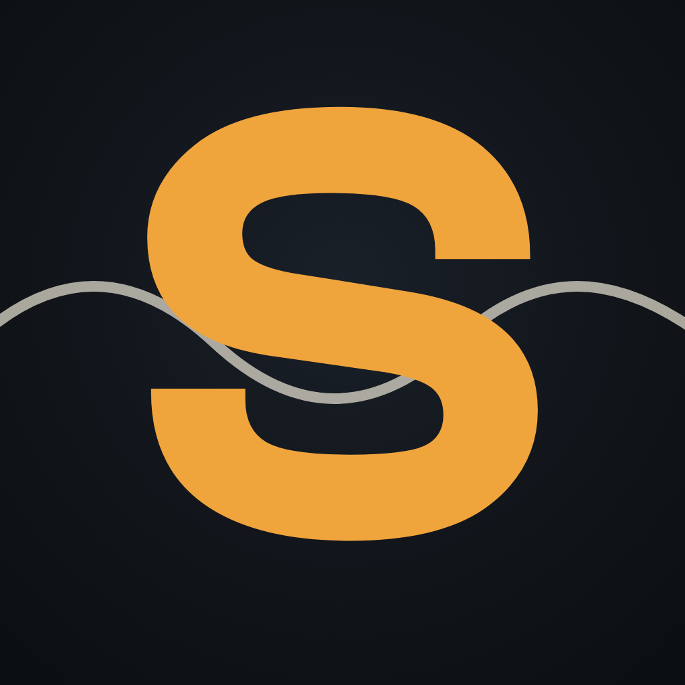

The heavy ClashDisplay S from the site header, not the thin standing-wave S. Each at 176px, then 64px and 32px square, then 48px round (the LinkedIn crop).
6 · the heavy S
The wordmark's S, alone, ember on graphite. Zero concept overhead: the most identifiable thing Sentys owns, at every size.
7 · the heating S
The site's heat ramp inside the letter: calm at the head, ember spine, drift-red tail. The product story without adding a single shape.
8 · the warning node
The machine in calm dust; one ember node lights where the stroke ends — the site's status dot, the moment Sentys speaks. Two colors, one idea.
9 · knockout tile
Inverted: graphite S punched from a full ember tile. App-icon energy, unmissable in a feed, loudest of the six at 32px.
10 · the pinned S
Logo-3's story at the wordmark's weight: the S as a standing wave hung between two dust nodes. Keeps the physics tie.

11 · the s hears the wave
The current logo's signal wave running behind the new S: the machine and the stream it listens to. Bridges old mark to new.